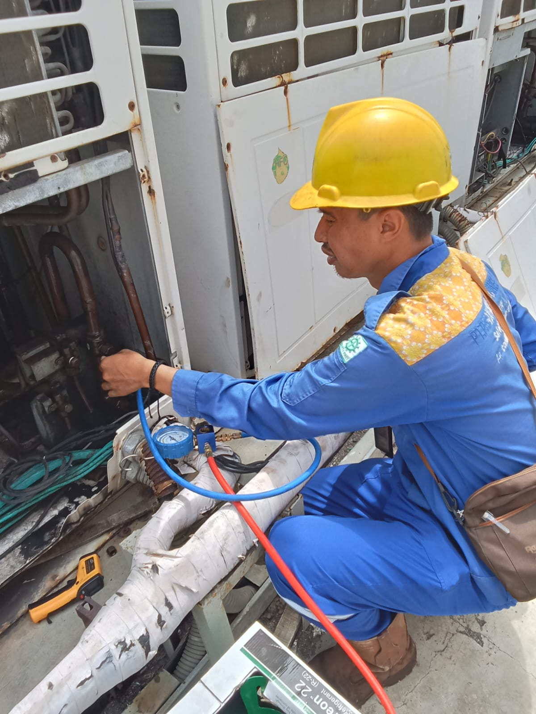
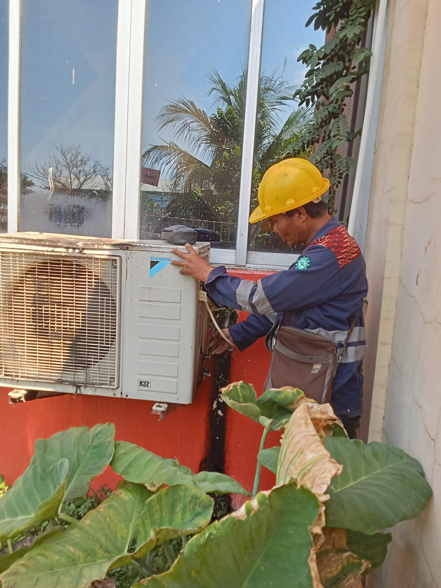
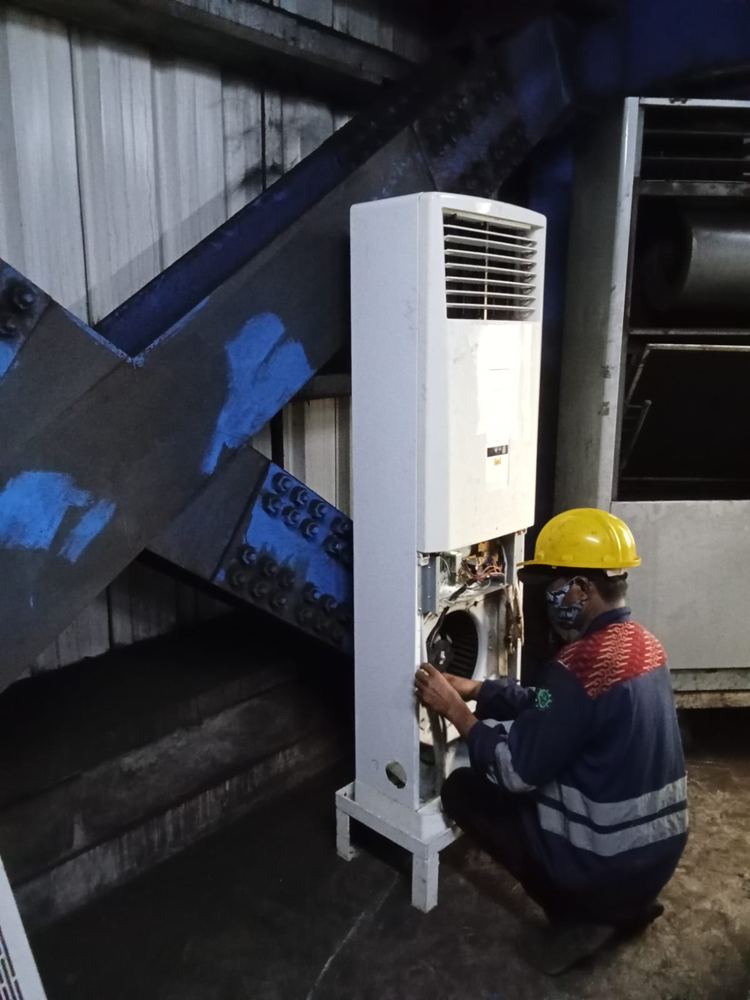
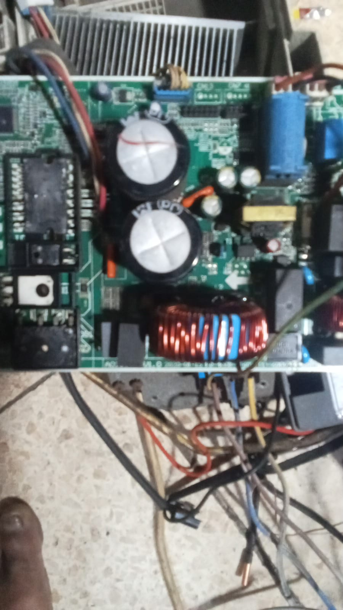

WALI TEHNIK melayani servis dan perbaikan AC, kulkas, dan mesin cuci di area Gresik, Surabaya dan sekitarnya. Diperiksa langsung di tempat, biaya jelas sebelum dikerjakan.
Pilih layanan sesuai kebutuhan, lalu chat langsung ke admin untuk jadwal kunjungan teknisi.
Cuci rutin, perbaikan, hingga pemasangan dan bongkar unit AC rumah dan kantor.
Penanganan kulkas satu dan dua pintu yang tidak dingin atau bermasalah.
Mesin cuci bukaan atas maupun depan, otomatis maupun manual.
Teknisi berkunjung langsung ke lokasi Anda di area Gresik, Surabaya dan sekitarnya.
Chat WhatsApp dibalas cepat, teknisi bisa dijadwalkan hari yang sama.
Setiap pengerjaan servis didukung garansi purna servis.
Anda tahu perkiraan biaya sebelum teknisi mulai mengerjakan.




Chat admin WALI TEHNIK untuk jadwalkan kunjungan teknisi ke rumah Anda di area Gresik, Surabaya & sekitarnya.